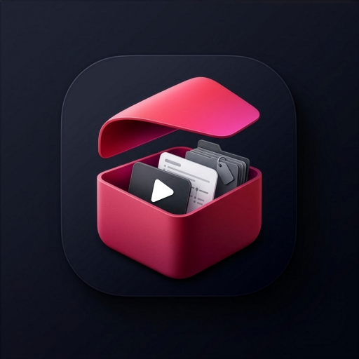

STASH · GOD2 · SPATIAL CHRONOMETER

S
0%
INITIALIZING SECURE ENCLAVE
🔊
Sound On · Tactile Glass
▶
Tap Ring to Stash
01 · Living Drift (0.00s)
Obsidian negative space (85-90%) with gentle ruby breath. Quiet Swiss restraint.
▶ Play
🔊 Audio On
◎ Organic On
← → / Space / R / O
0.00s